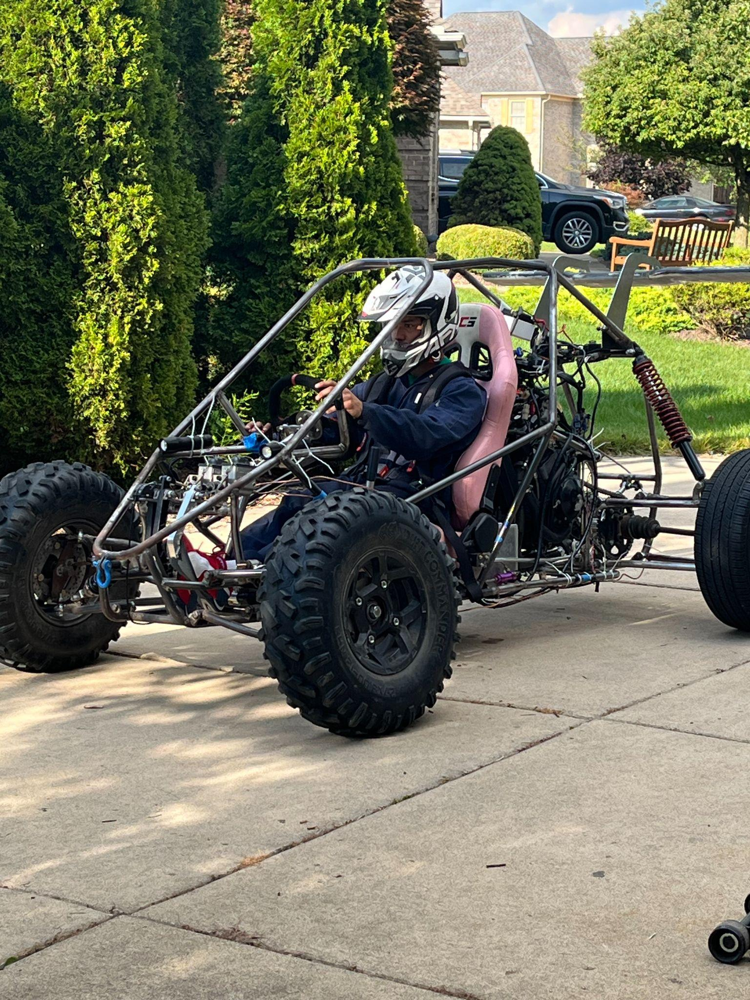
Independent Suspension Crosskart
Personal Project • Vehicle Design & Fabrication
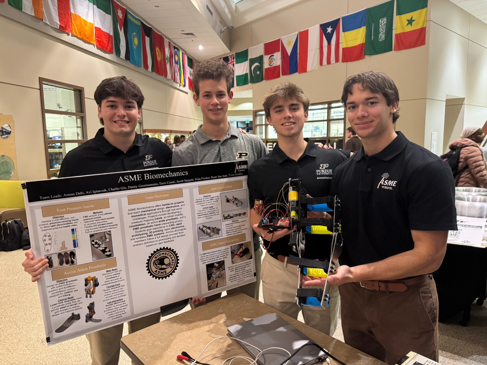
Biomechanics Product Development
Purdue ASME • Chief Engineer
Federal Division
Metal Additive Manufacturing
Phillips Corporation • Columbia Class Submarines
Design to Part
CNC Manufacturing & Mentorship
Bechtel Innovation Design Center • Teaching Assistant
3D Printing Business
Product Development • Manufacturing • Sales
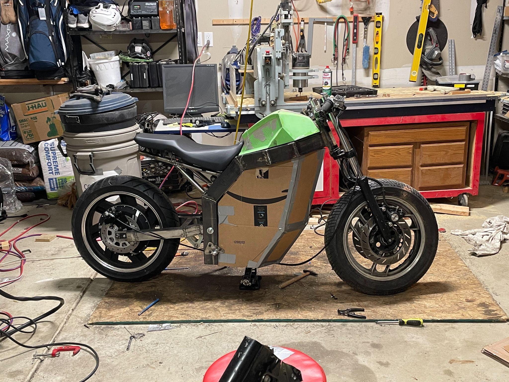
Electric Motorcycle
Personal Project • Mechanical & Electrical Systems
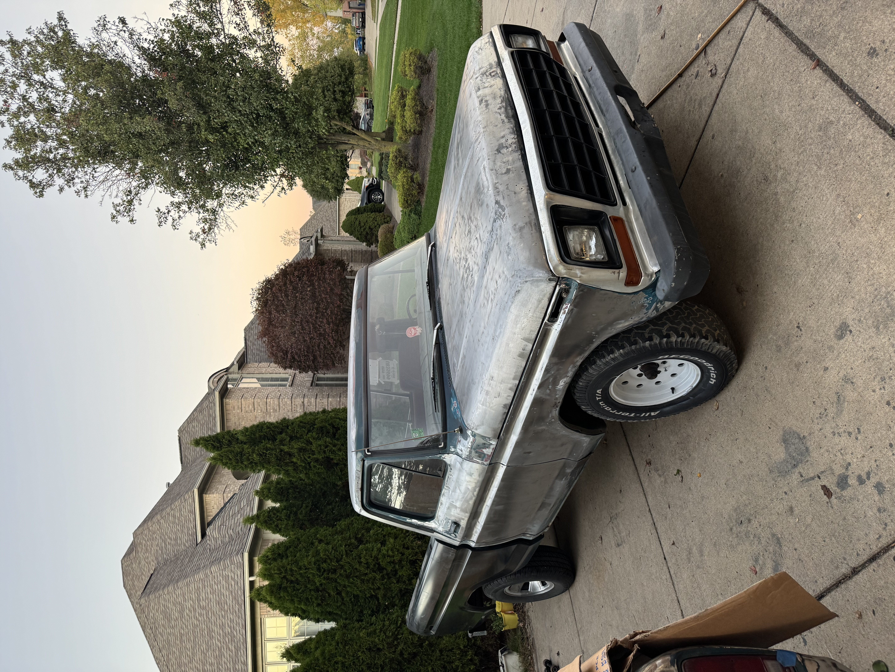
1979 Ford F-100 Restoration
Personal Project • Restoration into Sale
Independent Suspension Crosskart
Project Summary
Designed and built a single-seat off-road vehicle focused on high-speed, all-terrain performance through repeated development of the chassis, suspension, steering, and powertrain.
My Role
Project founder and lead designer responsible for system architecture, CAD development, fabrication, testing, troubleshooting, and coordinating a small student build team during the project's early stages.
Process & Solution
Developed the vehicle through three major design iterations and more than 450 CAD revisions. Each build cycle was used to improve component packaging, suspension behavior, structural layout, serviceability, and overall reliability.
Impact & Metrics
Produced a functional and predictable vehicle platform while building deep hands-on experience in mechanical design, fabrication, system integration, and iterative engineering.
Crosskart driving demonstration — the custom-built vehicle in action.
Completed crosskart prototype after multiple rounds of chassis, suspension, and powertrain development.
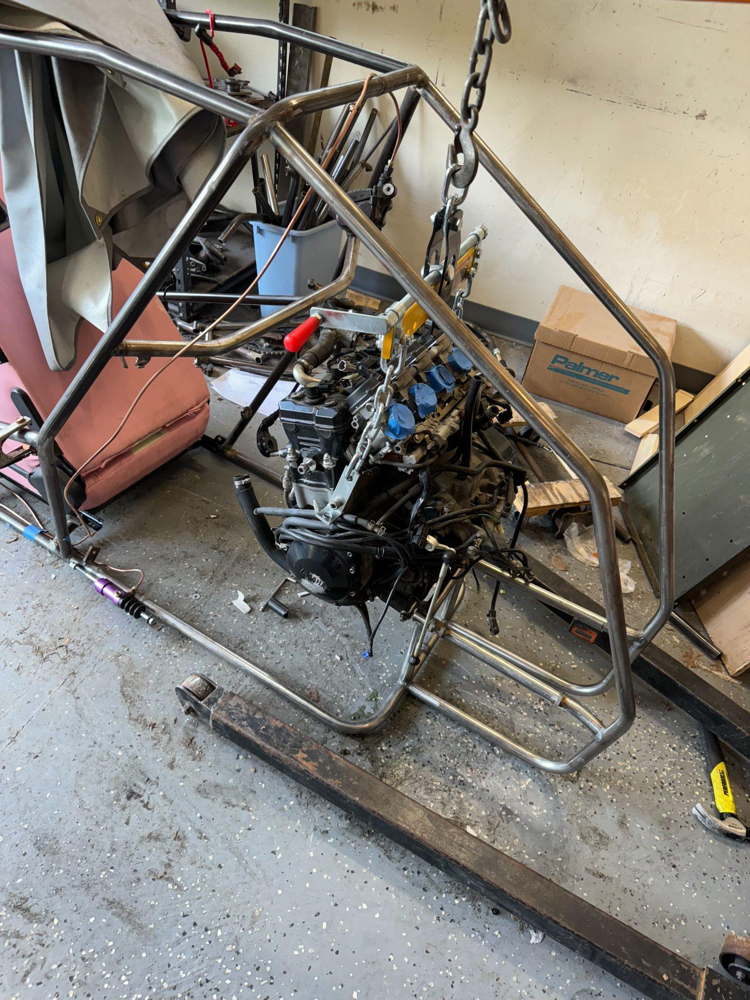
Fabrication and powertrain packaging during an earlier stage of the build.
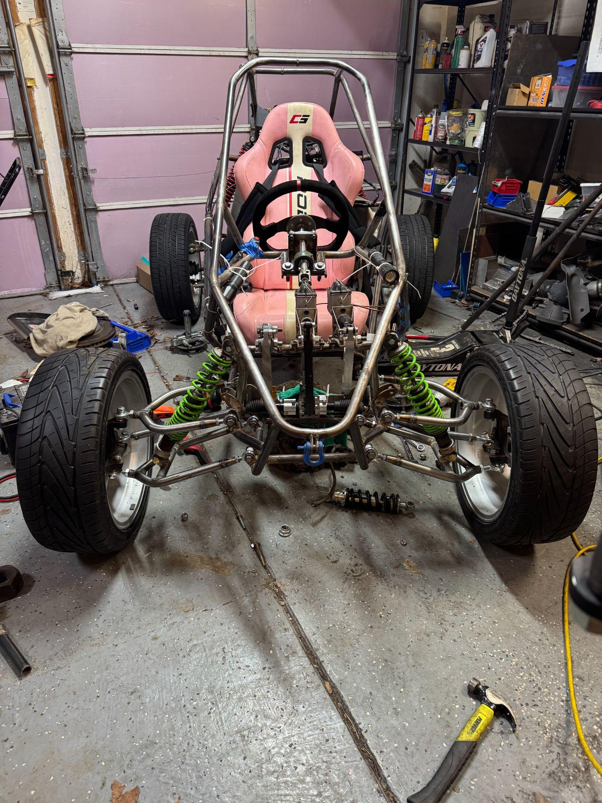
Front suspension, steering, and chassis packaging during development.
Biomechanics Product Development
Project Summary
Lead hands-on development of biomechanics devices that combine mechanical design, rapid prototyping, and practical user-focused engineering.
My Role
Chief Engineer responsible for technical direction, design review, CAD guidance, prototype development, and helping newer members build the skills needed to contribute effectively.
Process & Solution
Developed a lightweight portable traction splint using CAD, 3D printing, and generative design. The design incorporated a ratcheting drum mechanism to apply traction while reducing size and weight for easier use in remote environments.
Impact & Metrics
Produced a functional prototype while building a repeatable design process around rapid iteration, lightweighting, manufacturability, and team-based engineering.
Purdue ASME Biomechanics presenting student-developed rehabilitation and assistive-device projects.
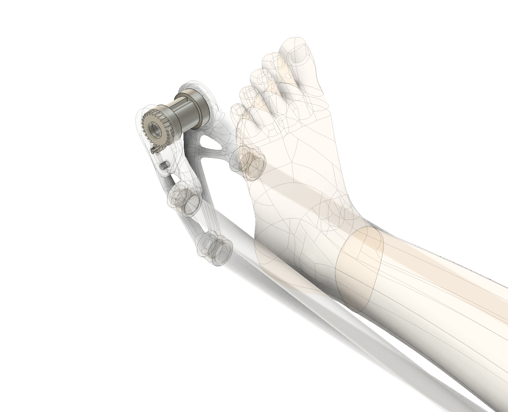
CAD development of the traction splint's compact mechanical architecture.
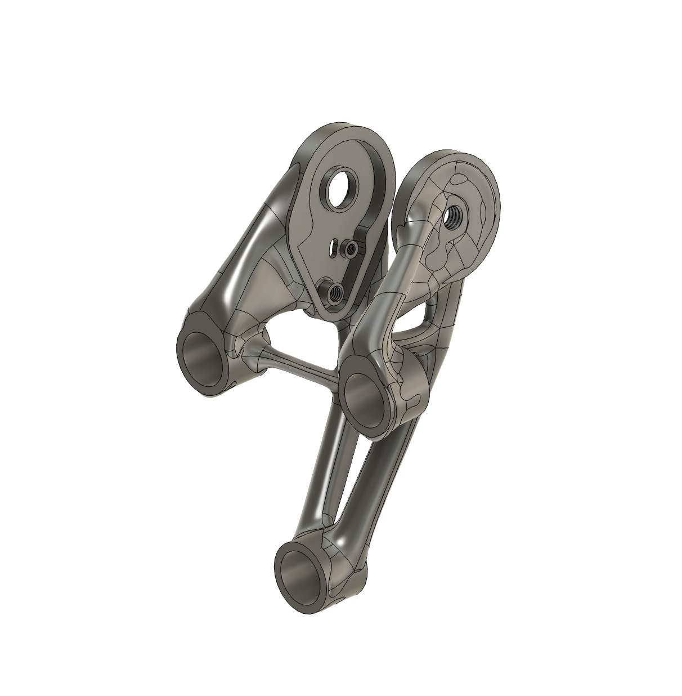
Generative-design iteration used to reduce mass while preserving the required structural function.
Metal Additive Manufacturing
Project Summary
Supported metal additive manufacturing work for the Columbia Class submarine program while developing experience with powder bed fusion and directed energy deposition technologies.
My Role
Additive Manufacturing Intern contributing to process analysis, manufacturing support, thermal research, and technical problem solving within a federal manufacturing environment.
Process & Solution
Simulated and assessed thermal warping conditions in DED processes, researched transient versus static thermal loading, and documented potential approaches for reducing manufacturing distortion.
Impact & Learning
Built practical experience connecting heat-transfer theory with metal additive manufacturing behavior while operating and learning both PBF and DED processes.
CNC Manufacturing & Mentorship
Project Summary
Support Purdue students through the complete design-to-manufacturing workflow, from CAD/CAM review through CNC setup, machining, and troubleshooting.
My Role
Teaching Assistant responsible for validating student manufacturing plans, operating CNC mills and lathes, maintaining safe shop practices, and mentoring students as they move from digital models to finished parts.
Process & Solution
Review CAD and CAM files for manufacturability and lab compliance, help students select tooling and setup strategies, and diagnose programming or machining issues before they become failed parts.
Impact
Help students produce safer, more reliable machining outcomes while building their confidence in CNC programming, setup, tooling, and shop best practices.
Avi's 3D Printing
Project Summary
Founded a small 3D-printing business during the COVID-19 pandemic, initially manufacturing mask strain-relief devices for healthcare workers.
My Role
Managed the full product lifecycle including design, manufacturing, quality control, production planning, order fulfillment, and customer communication.
Process & Solution
Expanded production capacity as demand increased, scaling the operation from one printer to five while improving throughput and maintaining consistent output.
Impact & Metrics
Scaled from approximately 10 units per month to 120 units per month and generated up to $5,000 in monthly sales.
Electric Motorcycle
Project Summary
Designed and built an electric motorcycle as an early independent engineering project combining vehicle packaging, fabrication, electrical systems, and battery development.
My Role
Solo designer and builder responsible for CAD refinement, component selection, frame construction, battery assembly, wiring, and system integration.
Process & Solution
Refined the layout in CAD, selected a hub motor and battery cells, built the frame, assembled the battery pack, and iterated on the mechanical and electrical packaging as the motorcycle took shape.
Impact
The project became a foundation for later engineering work by developing practical experience in circuitry, fabrication, CAD, troubleshooting, and multidisciplinary design.
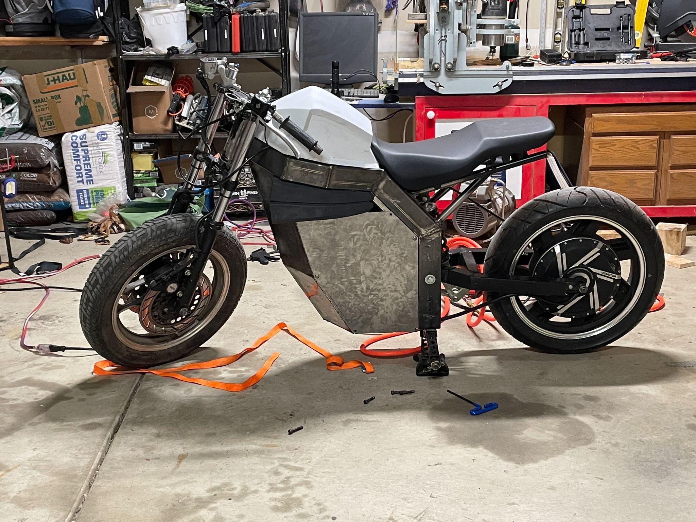
Early-stage motorcycle build showing the frame, motor, and battery enclosure packaging.
Later design iteration with bodywork and major systems integrated.
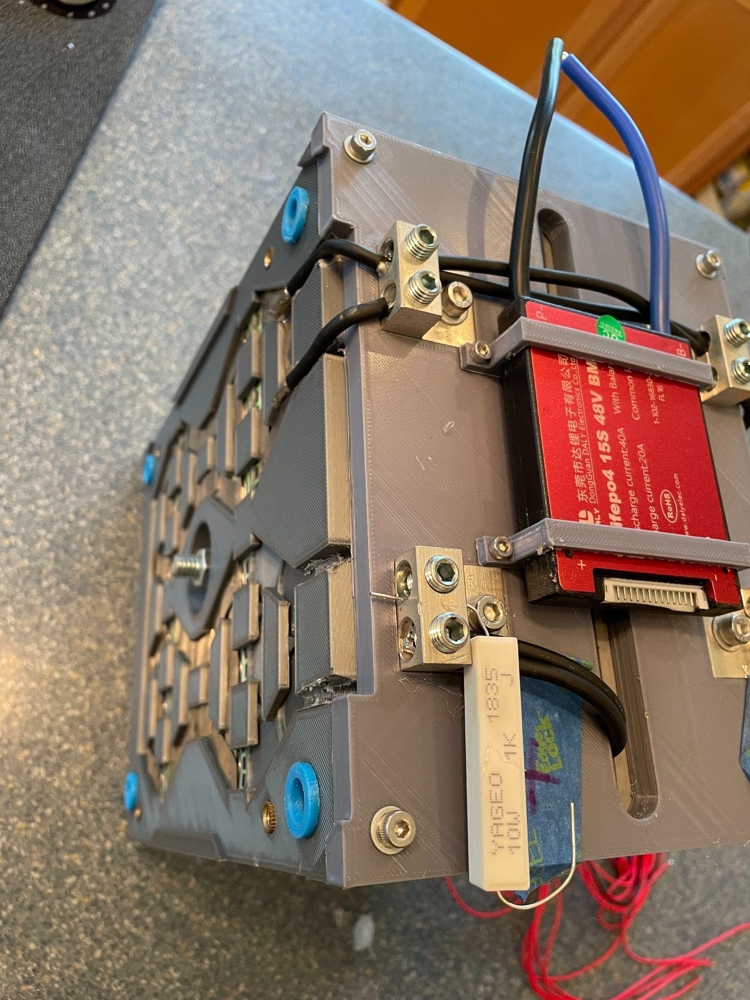
Electrical and battery-system hardware developed as part of the motorcycle project.
1979 Ford F-100 Restoration
Project Summary
Restoring a 1979 Ford F-100 pickup with a focus on mechanical reliability, body restoration, and returning a classic truck to roadworthy condition.
My Role
Owner and hands-on builder responsible for diagnosing issues, selecting components, planning repairs, and performing mechanical and bodywork tasks.
Process & Solution
Working through the fuel, braking, drivetrain, suspension, and electrical systems while planning bed replacement, body preparation, and paint. Evaluating parts and repair strategies against cost, serviceability, and the finished truck’s usability.
Engineering Focus
A systems-level restoration balancing mechanical function, manufacturing effort, parts compatibility, and budget.
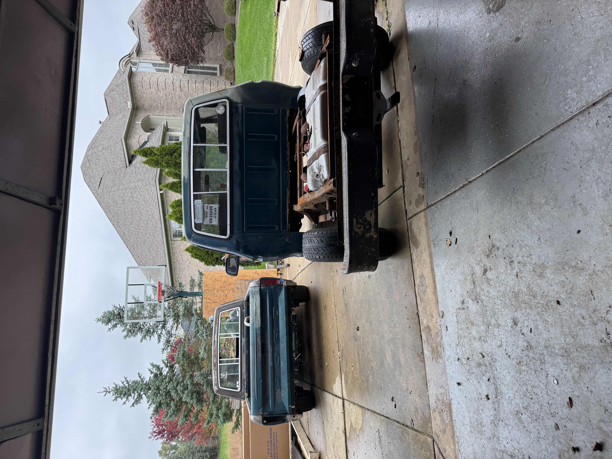
Two F-100 trucks at the start of the restoration.
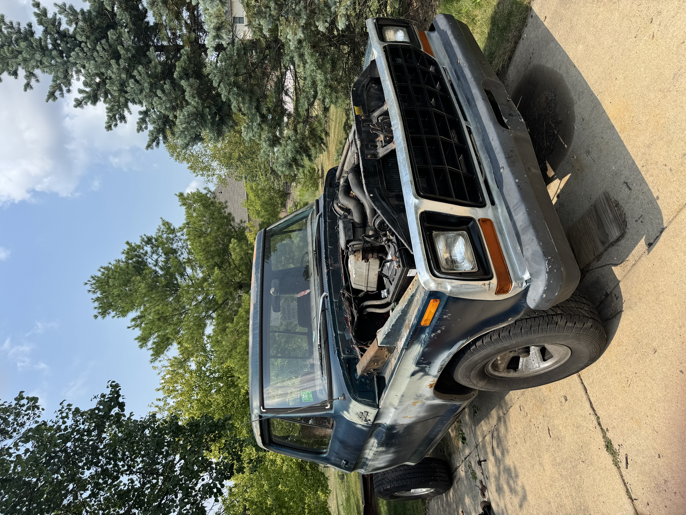
Initial condition of the F-100 with the front end disassembled.
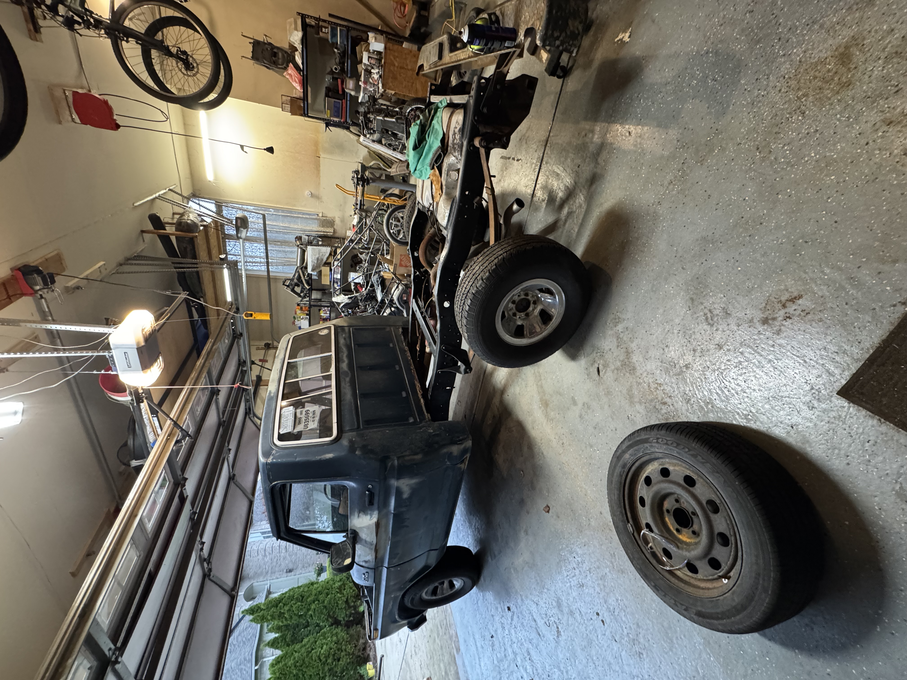
Truck in the garage during chassis and body work.
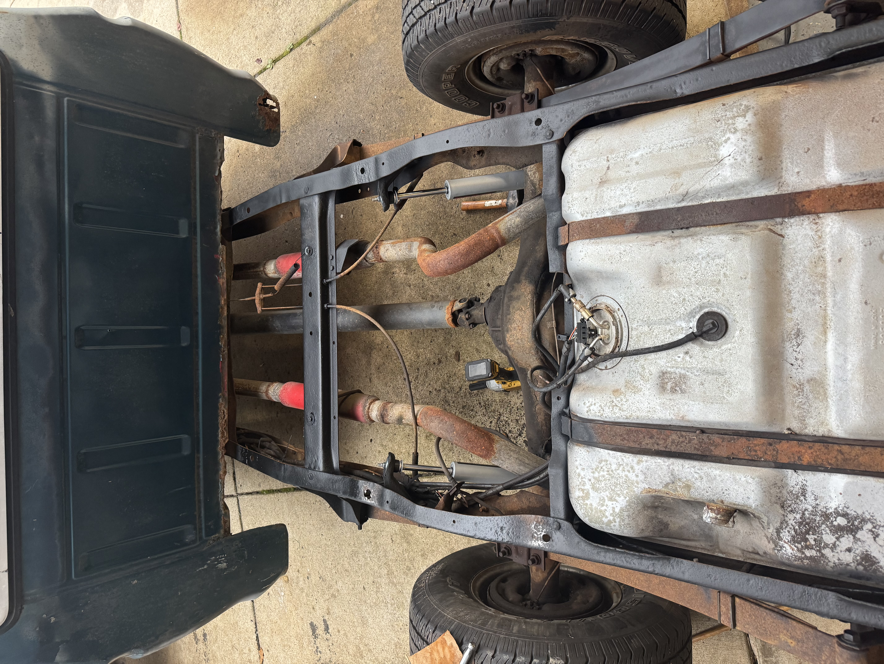
Rear frame, fuel tank, and suspension exposed for inspection.

Replacement pickup bed during installation preparation.
Body panels stripped and prepared for restoration.
1978 Ford F-100 Crown Victoria Swap
Project Summary
Reengineering a 1978 Ford F-100 around a Crown Victoria chassis, requiring substantial changes to the frame and the interfaces between the truck body and donor platform.
My Role
Lead designer and fabricator responsible for the CAD architecture and integration of major vehicle systems.
Process & Solution
Designed major frame revisions, custom steering, cab mounts, bed mounts, a custom dashboard and interior, and body attachment points in CAD. Developed the mounting geometry and packaging needed to fit the classic pickup body to the modified platform.
Engineering Focus
Custom vehicle packaging, structural interfaces, steering integration, and design-for-fabrication across an extensively modified chassis.

Initial donor truck and chassis condition

Brake rotor and Brembo caliper fitment

Body and bed mounted on the Crown Victoria platform

Wheel and brake clearance detail

Donor powertrain and wiring layout

Original F-100 cab before integration

Cab and rear suspension during chassis work

Front-end mockup and grille alignment

Cab positioning on the modified frame

Engine bay and cooling package mockup

Cab and donor chassis separated for fabrication

Powertrain and transmission packaging

Hood and front bodywork trial fit

Custom-machined brake pedal linkage

Body and bed assembly progress

Fender and front-end panel alignment

Rear frame fabrication and body mounts

Body panels fitted during assembly
2006 Yamaha GP1300R Repair
Project Summary
Repaired a major crack at the rear of a Yamaha GP1300R hull caused by failure of a threaded mounting insert.
My Role
Diagnosed the mounting failure, repaired the damaged hull, and redesigned the attachment hardware to address the underlying loading problem.
Process & Solution
Redesigned the mounting part to connect both threaded attachment points, distributing load across the connection instead of concentrating it at a single insert. The linked design also uses the second mounting point to resist rotation while tightening, reducing the tendency to lever against the damaged area.
Engineering Focus
Stress concentration reduction, fastener load paths, anti-rotation geometry, and repair-oriented redesign.

Yamaha GP1300R and trailer before repair.

Failed threaded insert and cracking around the mounting point.

Cracked hull at the rear mounting area.

Redesigned bracket joining the two mounting locations to distribute loading and resist rotation.

Rear of watercraft disassembled for access to the repair area.

Engine bay inspection during repair.
Two-Seater Custom Dune Buggy
Project Summary
Designed and began building a fully custom two-seat dune buggy powered by a 3.7L Mustang V6 and paired with a five-speed Tremec manual transmission.
My Role
Independent designer and builder responsible for the vehicle concept, layout, and hands-on fabrication during freshman and sophomore years of high school.
Process & Solution
Developed the custom vehicle around the selected powertrain and the packaging requirements of a two-seat off-road chassis. As the project progressed, assessed the cost, footprint, and effort required to complete it.
Outcome & Lessons
Chose to discontinue the build and redirect resources toward the Crosskart, which offered a more manageable cost and physical footprint. The experience helped shape later decisions about project scope and feasibility.
2010 Audi S4 Repair and Rebuild
Project Summary
Purchased a non-running 2010 Audi S4 for $800 and worked through complex mechanical and electronic issues to diagnose and repair the vehicle.
My Role
Owner and primary troubleshooter responsible for diagnostic testing, repair planning, component replacement, and ECU recovery.
Process & Solution
After an extended diagnosis, identified and replaced the starter. Reprogrammed an ECU that had been described as bricked. Additional repairs included the PCV valve, supercharger belt, oil cooler, hood strut, and engine mounts, along with injector cleaning.
Engineering Focus
Structured fault isolation, powertrain maintenance, automotive electronics, and troubleshooting across interconnected mechanical and control systems.

Engine bay during diagnosis and disassembly.

Audi S4 being transported for repair.

Rear view of the Audi S4 before further repairs.

Close-up of an engine component during teardown.

Removed gasket during engine repair.

Supercharged V6 with intake components removed.

Engine bay inspection and diagnostics.

Rear lighting after work on the vehicle.

Supercharger being lifted during repair.

Engine repair in the home garage.

Supercharged 3.0T engine bay.

Instrument cluster showing warning indicators during diagnosis.

Audi S4 exterior after mechanical work.
Audi S4 test-drive footage.
About Me
I'm Avi Ignaczak, an Integrated Business and Engineering student at Purdue University with a Mechanical Engineering concentration. I enjoy solving problems by moving between analysis, CAD, manufacturing, and physical testing until an idea becomes a working system.
My experience spans vehicle design, CNC machining, metal additive manufacturing, biomechanics, 3D printing, and engineering leadership. I am especially interested in environments where strong mechanical design and manufacturing knowledge can be combined with practical business decision-making.
- University: Purdue University
- Program: Integrated Business & Engineering
- Concentration: Mechanical Engineering
- Email: aignacza@purdue.edu
- LinkedIn: linkedin.com/in/avi-ignaczak